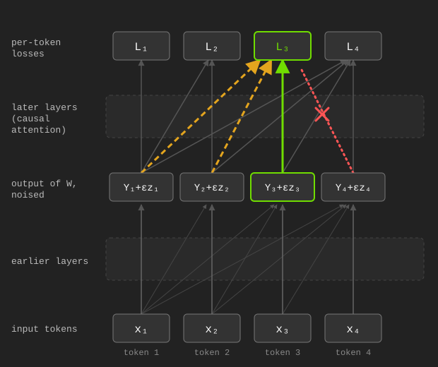
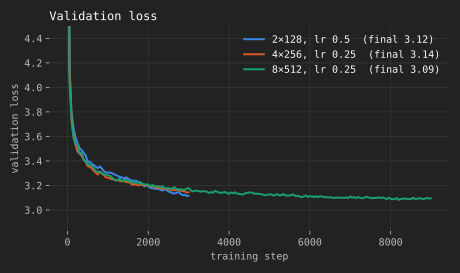
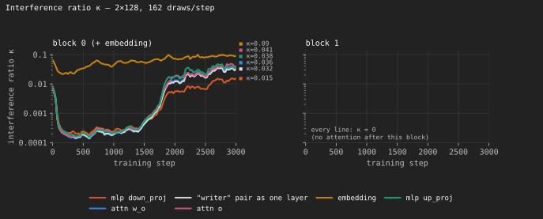
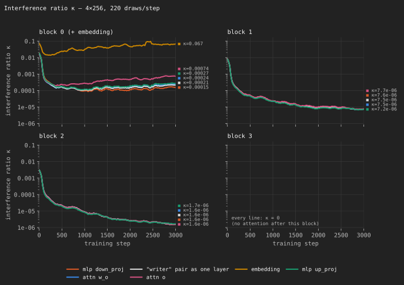
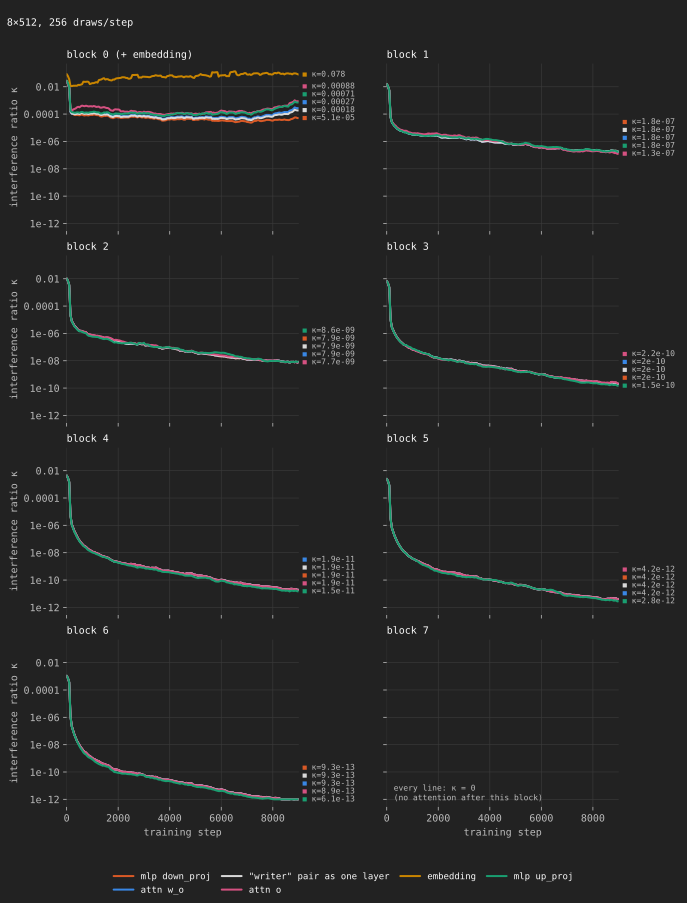

Since I wrote Scaling Agents to Unfathomable Depth and Context With Zeroth-Order Optimization, there have been multiple good Zeroth Order Optimization papers, particularly for pretraining. People have been asking for my take on them. So here I am, writing an article. But I got a bit carried away.
This is article going to appear really dense. Some parts are, but be not afraid, for the rest of the article is written to be very accessible. If you want to understand the algorithms, I have summarized them here in pseudocode and a table of terminology. You can skip past. In the math section, there is going to be a lot of math. But it's written so you don't have to read the stuff that's outside of code blocks. Then if you're curious about where these things are coming from you can look more closely, and use AI assistance to answer questions. Or just DM me, that works too.
The first standout paper is SOMA, by a team out of Stanford. Here's the method:
def soma_step(θ_e, b): # one update of one expert
grad_est = zeros(p // N)
for j in range(Z):
z = sparse_rademacher(p // N)
proj_grad = (L(Φ(θ_e + ε * z, b), E) - L(Φ(θ_e - ε * z, b), E)) / (2 * ε)
grad_est += proj_grad * z
grad_est /= Z
return adam_step(θ_e, grad_est, α)
def soma_train(data):
θ_seed, E = pretrain_briefly(data) # one model (N = 1); E is then frozen
D, centroids = kmeans(tfidf(data), N) # split data into N clusters
θ = [copy(θ_seed) for e in range(N)]
for e in range(N): # In parallel, on different machines
for b in batches(D[e], B):
θ[e] = soma_step(θ[e], b)
return θ, E, centroids
def soma_predict(θ, E, centroids, context):
S = nearest(centroids, tfidf(context), k)
return mean([softmax(Φ(θ[e], context) @ E.T) for e in S])| Term | Meaning | Type / Shape |
|---|---|---|
N |
number of experts = number of data clusters | int |
p |
total parameters across all experts | int |
θ[e] |
weights of expert e (small LSTM), flattened |
float [p/N] |
θ_seed |
weights of a briefly pretrained single model | float [p/N] |
Φ |
model architecture; returns hidden states | function → [B, T, d_E] |
E |
shared token embedding/decoder, frozen | float [V, d_E] |
V, d_E |
vocab size, embedding width | int |
L |
next-token cross-entropy, decoding through E |
function → float scalar |
data |
training data | dataset of token sequences |
D[e] |
data cluster e |
dataset of token sequences |
centroids |
k-means centroids of the clusters, in tf-idf feature space | float [N, d_tfidf] |
B, T |
sequences per batch, tokens per sequence | int |
b |
batch from D[e] |
int tensor [B, T] |
batches(D, B) |
iterates over D in batches of B
sequences |
generator of [B, T] |
θ_e |
weights of the one expert being updated | float [p/N] |
z |
random direction; each entry 0 w.p. ½, else ±1 | float [p/N] |
ε |
perturbation scale | float |
Z |
number of directions per step | int |
proj_grad |
central finite difference along z |
float scalar |
grad_est |
estimated gradient for θ[e] |
float [p/N] |
α |
learning rate | float |
context |
prompt at inference | int tensor [T] |
k |
experts used at inference | int |
S |
indices of the k experts whose cluster centroids are
nearest to context |
list of int |
The name of the paper is "Scaling Zero-Order Pretraining Through Model Sharding." That is true, we are doing that. But fundamentally, what we're doing is actually ensembling. We are not capable of pretraining good models with ZO. What if we pretrain a bunch of bad ones, and then ensemble? Then perhaps we can get a lot further.
I am not sure how to feel about this paper. On one hand, it seems obvious. Obviously you can get gains by ensembling. It's not something I would even think to publish. But on the other hand, nobody has pointed out before that Branch-Train-Merge clearly has applications in ZO. It didn't occur to me that this was a reasonable scaling axis. And if the noise issue in ZO pretraining truly cannot be beaten, then this is clearly the best strategy, and nobody is doing it. It doesn't solve any of the fundamental problems in ZO, and obviously it cannot scale past a certain size or training budget, but I'm glad we now have a good example of people doing this.
I think there's a good chance this ends up being really useful.
The next is Dust, out of qlabs. The method:
def dust_step(θ, b):
ℓ, X = forward(Φ, θ, b) # save each layer's input X[W]
for W in linear_layers(θ):
grad_Y = zeros(T, d_out)
for j in range(Z):
z = randn(T, d_out)
ℓ_j = forward(Φ, θ, b, noise={W: ε * z}) # adds ε*z to Y, W's output
proj_grad = (ℓ_j - ℓ) / ε
grad_Y += proj_grad[:, None] * z
grad_Y /= Z
grad_est = grad_Y.T @ X[W]
W -= α * grad_est
return θ
def dust_train(θ, data):
for b in batches(data, T):
θ = dust_step(θ, b)
return θ| Term | Meaning | Type / Shape |
|---|---|---|
θ |
all model weights | list of tensors |
Φ |
model architecture | function |
data |
training data | dataset of token ids |
batches(data, T) |
iterates over data in batches of T
tokens |
generator of [T] |
b |
input batch | int tensor [T] (token ids) |
T |
number of tokens in b |
int |
L |
loss; returns one loss per token | function → [T] |
ℓ |
clean per-token loss, L(Φ(θ, b)) |
float [T] |
W |
weights of one linear layer | float [d_out, d_in] |
d_in, d_out |
that layer's input / output width | int |
X[W] |
input to layer W in the clean pass |
float [T, d_in] |
Y |
output of layer W in the clean pass,
X[W] @ W.T |
float [T, d_out] |
z |
gaussian noise added to Y, independent per token |
float [T, d_out] |
ε |
perturbation scale | float |
Z |
number of draws per layer | int |
ℓ_j |
per-token loss with noise added | float [T] |
proj_grad |
per-token finite difference | float [T] |
grad_Y |
estimate of ∂L/∂Y | float [T, d_out] |
grad_est |
estimated gradient for W |
float [d_out, d_in] |
α |
learning rate | float |
Dust seems like a massive step forward. It shows that many of the supposed issues with ZO for pretraining were in fact skill issues. This is great.
The upshot of the method is that we need to sample more perturbations, sharded across more axes. Specifically on the token axis each token gets a separate perturbation, and on the and the layer axis each token gets a separate perturbation.
It is unfortunate, though, that this research direction kind of flies in the face of the reason I was excited about ZO in the first place. To train a recurrence-complete architecture without backprop through time. This method only works on transformers and other architectures with a parallelizable forward pass, in settings with loss functions that can be parallelized. You need the per-token losses ℓ, which does not exist if you're doing something like trying to replace RL. And the per-token losses are not clean if you do something like roll out an RNN, because of the state dependence. And even if it might work on an RNN, it's expensive.
Still, the observation that each token is a place where you can effectively split to sample more perturbations is novel. Or, it makes a tremendous amount of sense in hindsight, but nobody thought of it until now. Let's make sense of it.
First, recall that training transformers is parallelizable. There are efficiency benefits for running everything at once, but efficiency is the only reason we batch. The forward pass for one token does not depend on the forward pass of the previous. The standard crossentropy objective just averages all those individual token losses. We know how much of the loss is that token's fault, and so if we perturb activations we can know how much of a change in loss is that token's fault.
Next, recall from the last article the gradient variance formula for SPSA:
Var(grad_est) = ∇L(Φ(θ))² / Z
+ ∇L(Φ(θ,xᵢ))² / ZBWhere the first term is the noise from sampling perturbations, and the second is the noise from sampling batches of data. We want to make tthe sum of these two numbers go down. That is the most important thing for the scalability of ZO pretraining, or training in general.
Scaling B and Z each reduce the variance. If you have the choice between scaling Z (number of perturbations) or B (batch size), which do you scale? You scale Z, because it divides both terms, especially the first one, which becomes the dominant source of variance as you increase the parameter count. This is especially good because we desperately want to increase the parameter count.
The virtual population method effectively takes you from the
B = n_seqs * seq_len
Z = n_pert
of SPSA to
B = n_seqs
Z = n_pert * seq_len
in Dust, because every token gets its own individual z.This is good. Big. Huge. It makes the SNR less terrible, and implies that ZO may be a great way to train on really really long sequences.
Of course, the math is not that simple. I said "effectively." Let's get into that.
Let's redo the MeZO math from the last article, but for Dust. Like last article, you can skim by reading only the parts outside code blocks.
Consider a single linear layer W, with input
X and output Y. Dust adds gaussian noise to
Y, drawn fresh for every token. For token t,
the update rule is:
proj_gradₜ = (Lₜ(Φ(θ, b; Y + εz)) - Lₜ(Φ(θ, b))) / ε
grad_Yₜ = proj_gradₜ * zₜ
For some per-token loss function L, where Lₜ is the loss at token t,
some model architecture Φ,
the current model weights θ,
a batch of inputs b, containing T tokens,
the output Y of layer W, where Yₜ is token t's row, of width d_out,
the forward pass Φ(θ, b; Y + εz), which adds εz to Y and runs the rest of the model,
a gaussian distribution z ~ N(0,I) of the same shape as Y (sampled every draw), where zₜ is token t's row,
and a scalar hparam ε.For readability, let's say ∇ₛLₜ is the gradient of token
t's loss with respect to Yₛ, token
s's row of the layer output. Token t's loss
can depend on Yₛ for any s ≤ t, because
attention in the later layers reads from earlier tokens. It can't depend
on s > t, because of the causal mask.

Now let's expand the loss around Y, and plug it into the
update rule. The un-noised losses cancel, and we are left with the
gradient and noise.
Lₜ(Φ(θ, b; Y + εz)) ≈ Lₜ(Φ(θ, b)) + Σₛ ∇ₛLₜ · εzₛ (summing over s ≤ t)
proj_gradₜ ≈ (Lₜ(Φ(θ, b)) + Σₛ ∇ₛLₜ · εzₛ - Lₜ(Φ(θ, b))) / ε
= Σₛ ∇ₛLₜ · zₛ
= ∇ₜLₜ · zₜ + Σₛ<ₜ ∇ₛLₜ · zₛ (split off the s = t term)The first term is the gradient of token t's loss with
respect to its own noise. That's what we want. The second is the noise
we added at earlier tokens, leaking into token t's loss
through attention. We'll call it "leakage."
Is it unbiased?
E[grad_Yₜ] = E[(∇ₜLₜ · zₜ) * zₜ] + Σₛ<ₜ E[(∇ₛLₜ · zₛ) * zₜ]
= E[zₜ zₜᵀ] * ∇ₜLₜ + 0 (zₛ and zₜ are independent)
= ∇ₜLₜYes. The leakage averages out. The expansion assumed ε
is small, but this part doesn't need it: by Stein's Lemma from last
article (generalized
for non-gaussian noise), it holds at any ε, for a slightly
smoothed loss. Dust as a whole is still biased, though. See the caveats
below.
What about variance?
Var(proj_gradₜ) = E[(Σₛ ∇ₛLₜ · zₛ)²]
= Σₛ ||∇ₛLₜ||² (cross terms vanish, zₛ independent)
= ||∇ₜLₜ||² + Σₛ<ₜ ||∇ₛLₜ||²
= ||∇ₜLₜ||² * (1 + κₜ)
where κₜ = Σₛ<ₜ ||∇ₛLₜ||² / ||∇ₜLₜ||²The first part is the variance MeZO has, for one token. The rest is
the leakage. κₜ (kappa) is the ratio between them. The
paper calls this kind of noise "interference," so I'll call
κₜ the interference ratio. The variance is MeZO's, times a
(1 + κₜ) penalty.
Now the SNR, for one token and one draw:
grad_Yₜ = proj_gradₜ * zₜ
so
E[||grad_Yₜ||²] ≈ E[proj_gradₜ²] * E[||zₜ||²]
= ||∇ₜLₜ||² * (1 + κₜ) * d_out (zₜ has d_out unit-variance entries)
and the signal is ||E[grad_Yₜ]||² = ||∇ₜLₜ||², so
SNR ≈ ||E[grad_Yₜ]||² / E[||grad_Yₜ||²]
= 1 / (d_out * (1 + κₜ))Compare this to MeZO's 1/p. The p, every
parameter in the model, became d_out, the width of one
layer's output. For one draw on one token, the gap is
p / d_out:
| Model | p (parameters) |
d_out (hidden size) |
p / d_out |
|---|---|---|---|
| Dust's model (8 layers, width 512) | ~25M (excluding embeddings) | 512 | ~49,000× |
| Qwen3.5-9B (32 layers) | 9.65B | 4096 | ~2.4M× |
| Qwen3.5-27B (64 layers) | 27.8B | 5120 | ~5.4M× |
So, it goes without saying, this is very lucrative. And the gap grows
with model size, because p grows with width² × layers,
while d_out only grows with width.
The weight gradient keeps this SNR. Token t's share of
grad_est = grad_Yᵀ X is grad_Yₜ Xₜᵀ, and
Xₜ is known exactly from the clean pass, so it scales the
signal and the noise equally. We get a gradient for all
d_out * d_in weights while only searching over
d_out directions. The d_in half is free.
Now average over all T tokens and Z draws.
Every token's noise is independent, so the T estimates are
uncorrelated, leakage and all. One forward pass gives you T
independent estimates instead of one, which is the whole virtual
population trick. Writing κ for the average κₜ
over the batch, and splitting off the data variance like last time, the
variance per coordinate is:
Var(grad_est) = (1 + κ) * E[||∇ₜLₜ||²] / ZT
= (1 + κ) * ∇L(Φ(θ))² / ZT
+ (1 + κ) * ∇L(Φ(θ,xₜ))² / ZT∇L(Φ(θ))² is the true gradient and
∇L(Φ(θ,xₜ))² is the data variance of a single token, both
with respect to Y this time instead of θ.
Compare that to SPSA, with a batch of B = T tokens:
Var(grad_est) = ∇L(Φ(θ))² / Z
+ ∇L(Φ(θ,xᵢ))² / ZTThe data noise is the same. The direction sampling noise, the
irreducible one that scales with the parameter count, gets divided by
T. Every token in the batch is its own population member
with a batch size of one. In SPSA terms, Dust takes you from
B = T
Z = n_pert
to
B = 1
Z = n_pert * Tin exchange for the (1 + κ) penalty, where
T counts every token in the batch, across all the
sequences.
Now the dimension. Ignoring the data noise:
SNR(SPSA) ≈ Z / p
SNR(Dust) ≈ ZT / (d_out * (1 + κ))That's not quite a fair fight, because Dust needs its own
Z draws for each layer, while SPSA perturbs the whole model
at once. With n_layers linear layers of about equal size,
p ≈ n_layers * d_out * d_in, and Dust spends
n_layers times as many forward passes. Per forward
pass:
SNR(Dust) / SNR(SPSA) ≈ T * d_in / (1 + κ)T from the virtual population, d_in from
getting the input side of the weight gradient for free. Both are big
numbers. This is why Dust works.
κ in
practice?As long as κ is small, that is. So I measured it. I
trained small transformers on TinyStories
with the Dust repo's own training step, at three sizes: 2 layers of
width 128, 4 of width 256, and 8 of width 512, which is the paper's
shape. Every 25 steps, right before the update, I measured
κₜ exactly, with backprop, on the batch it was about to
train on. Backprop is only used for the measurement. The training never
sees it. The code is here.




There's one panel per block, and one line for each kind of layer Dust
adds noise to. κ is small everywhere. It starts at 0.01 to
0.1, drops to about 10⁻⁴ within a few hundred steps, and
climbs back up once the model learns to use context. It's biggest at the
embedding and in the first block, which have the most attention after
them, and exactly 0 in the last block, which has none. In between, it
shrinks with every block. The worst single measurement was 0.35, at the
embedding of the 8-layer model, and it's usually under 0.1. So the
(1 + κ) penalty is under 1.4, and usually about 1.05.
That's nothing next to the T and d_in
factors.
These models barely use context, though. Leakage goes up exactly when a model starts leaning on context. The 8-layer model learns slowest, so I ran it for 9000 steps instead of 3000 (that's the figure above). Even then, it only starts leaning on context near the end, and only in the first block. So expect more leakage from models that use context more.
The gray line needs explaining. Dust adds noise to the two layers
that write into the residual stream, attn w_o and
mlp down_proj, in the same forward pass. Each gets its own
noise, and they share one reward. That's exactly one layer with both
outputs side by side, so the gray line treats them as one, with twice
the d_out. That costs SNR through d_out, not
κ. The paper doesn't say why it pairs them, so I checked:
at the same number of forward passes, pairing beats giving each layer
its own passes, but only because of bf16. The rounding error in each
loss difference is fresh noise in every draw, and pairing averages it
over twice as many draws. In fp32, it's a wash.
The same measurements also confirm the variance formula. Dust's
actual reward variance matched ||∇ₜLₜ||² * (1 + κₜ) to
within about 5%, even with its large ε.
∇ₜLₜ is how token t's activations affect
token t's own loss. But they also affect every later
token's loss, through attention. The true gradient is:
∇ₜL = ∇ₜLₜ + Σᵤ>ₜ ∇ₜLᵤDust only gets the first part, so it's biased. The paper knows this.
For attention keys and values, it also gives token t a
discounted share of the later tokens' losses, with a decay factor
γ. That removes the bias, but adds the later tokens' noise,
so it's a bias-variance knob. In my runs the bias was small: by the end
of training, the weight gradient Dust aims for had a cosine similarity
of 0.99 with the true gradient.
ε is not smallThe activations come out of an RMSNorm, so each coordinate is about
unit size, and Dust uses ε = 0.2 or 0.4.
That's 20-40% noise. The mean is fine at any ε, but the
variance formula is only first order. It still matched my measurements.
A bigger ε means more smoothing, which costs an
O(ε²) bias, the same as ES. A smaller ε costs
precision, because the bf16 rounding error in the loss difference gets
divided by ε. The repo's deeper layers use
ε = 0.4, because 0.2 "moves the loss too little ... for a
readable reward." So ε has to be tuned, like ES's
σ.
All of this works for any noise with zero mean, unit variance, a
symmetric distribution, and independent coordinates. Rademacher noise
(every coordinate is ±1) works too, and is slightly less noisy. The one
rule you can't break is independence across tokens. Without it, the
T estimates are correlated and the virtual population is
gone.
Over at qlabs they also recently launched a speedrun, which they call noise. Not technically a paper, but I have a take on this too.